Ombra
各バージョンには、変更点と更新方法をまとめたノートがあります。
VRで過ごす時間をまるごと支える、Windows用の無料アプリ。HaritoraXやSlimeVR互換トラッカーでのフルボディトラッキング、音楽や心拍数を表示できるVRChatのチャットボックス、クラッシャー対策、そして手首のパネル。
Ombraは、HaritoraXとSlimeVR互換トラッカーを単独でSteamVRにつなぎます。ほかのアプリは不要です。センサーとヘッドセットから体を組み立て、すべてのトラッカーをなめらかにし、プレイ中にドリフトを補正します。
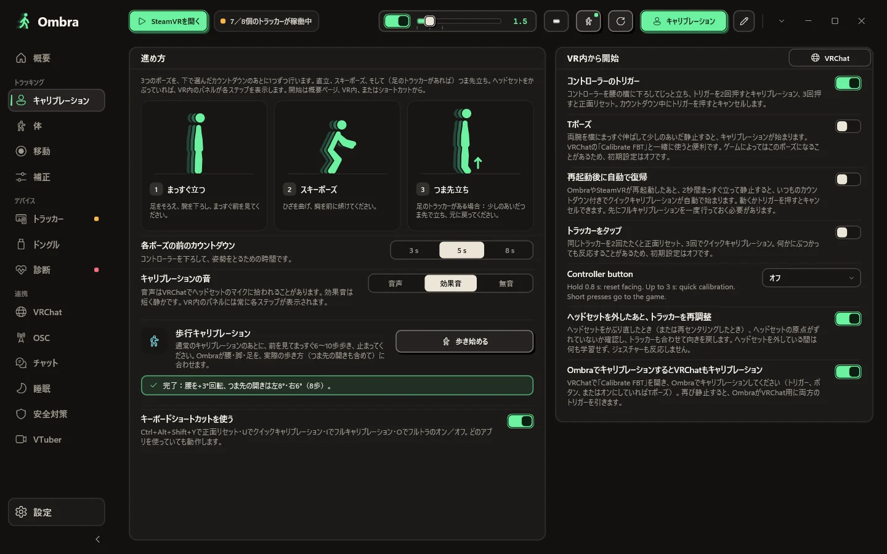
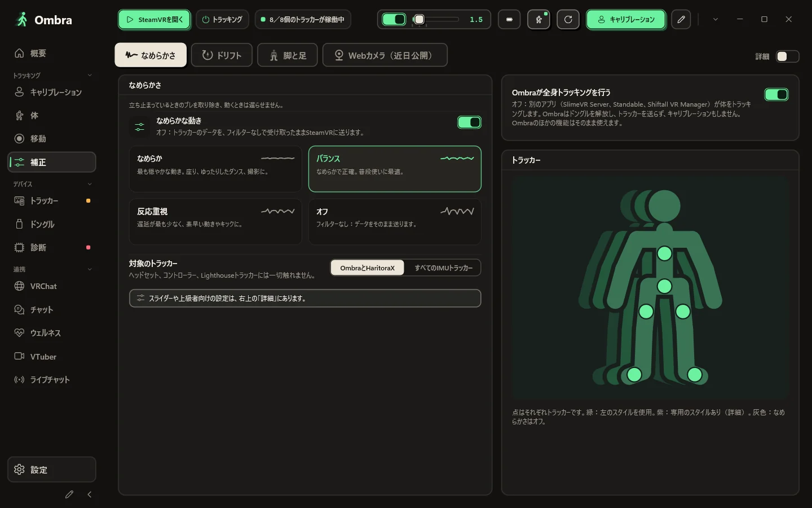
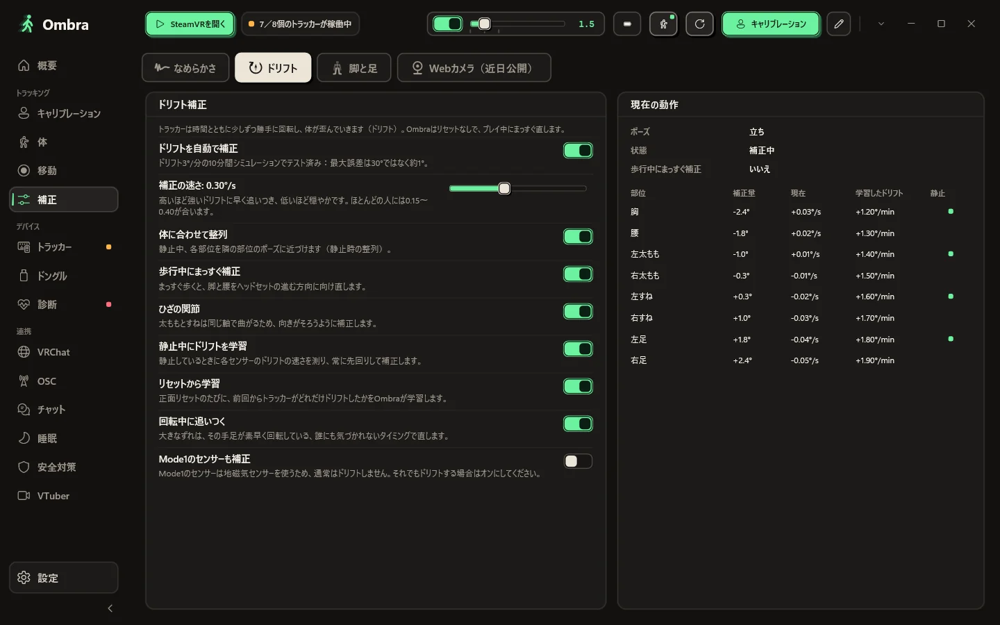
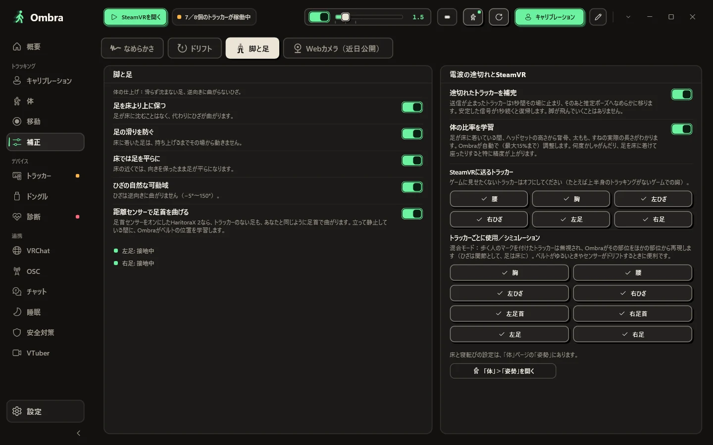
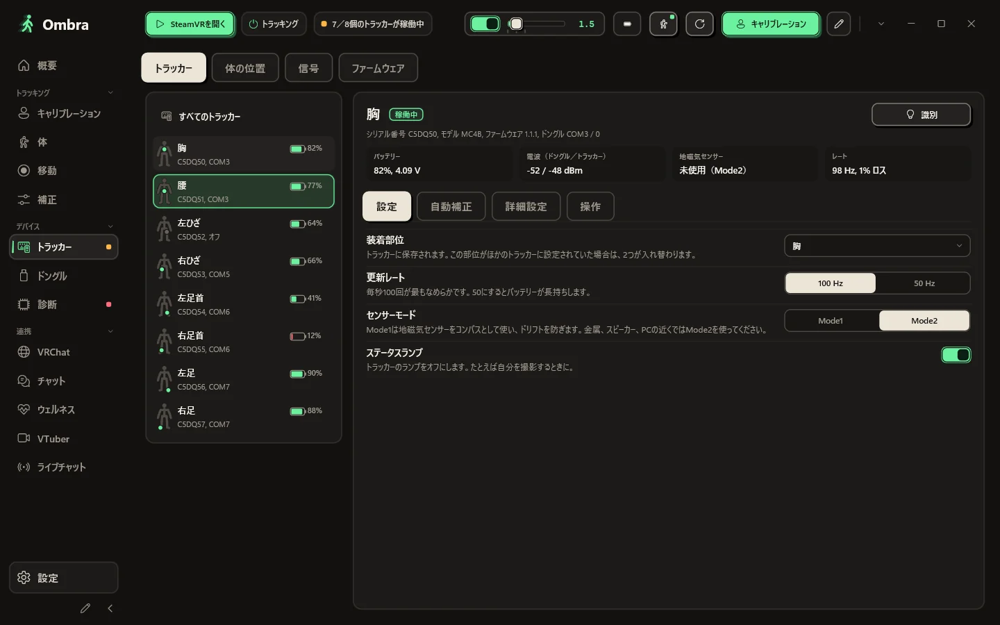
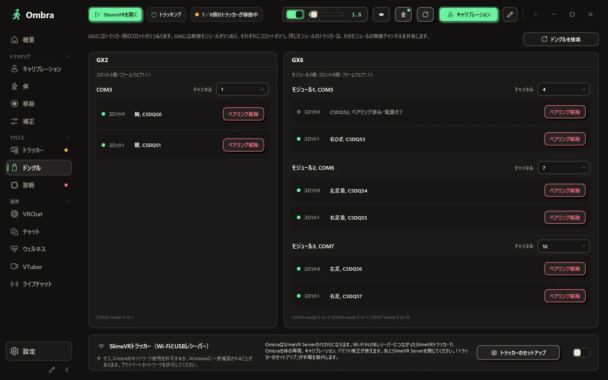
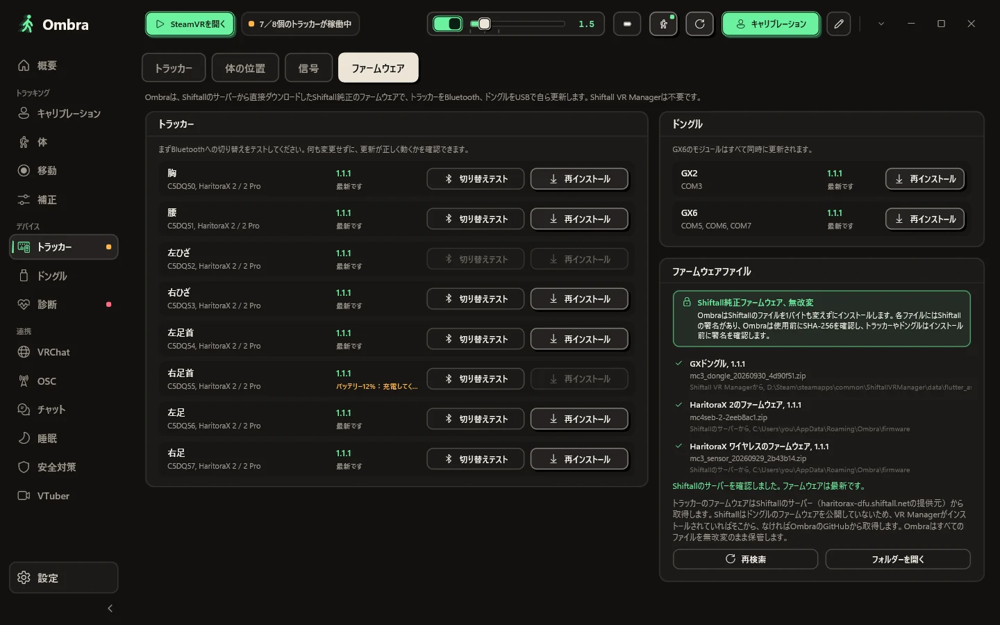
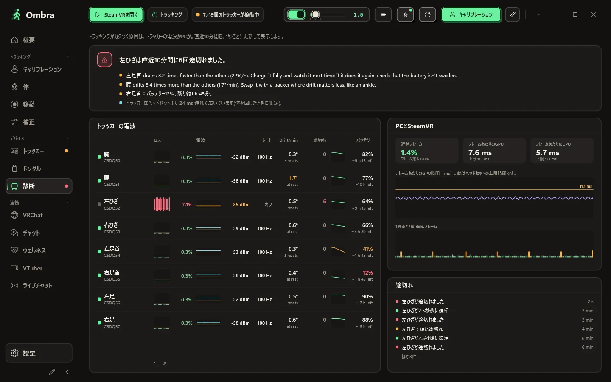
センサーとヘッドセットからOmbraが組み立てた体を、正面・側面・自由視点の3Dで表示します。各トラッカーがトラッキング中か、推定か、圏外かもわかります。
まっすぐ立ち、スキーポーズでかがみ、足のトラッカーがあればつま先立ちに。うまくいかないときは、どの部位を確認すればいいかをOmbraが表示します。
なめらか、バランス、反応重視、オフから選ぶか、スライダーで好きなレベルに。トラッカー1個だけに別のスタイルを設定することもできます（例：足だけ落ち着いた動きに）。
ドリフト補正はプレイ中に動作し、各部位で何をしているかをライブ表で確認できます。
体の動きは自然なまま。足は床に沈まず、接地した足は滑らず、ひざが逆向きに曲がることもありません。
シリアル番号、ファームウェア、ドングルのスロット、バッテリー電圧、双方向の電波強度、地磁気センサーの状態、実際の更新レート。
GX2にはスロットが2つ。GX6には無線モジュールが3つあり、それぞれにスロットが2つあります。Ombraはすべてのモジュールと、各スロットのトラッカー、そのチャンネルを表示します。
トラッカーはBluetooth、ドングルはUSBで、Shiftall純正のファームウェアファイルを改変せずにそのまま使って更新します。
トラッキングがカクつくときは、診断ページで原因がわかります。トラッカーごとのパケットロス、電波、実際の更新レートを、SteamVRのフレーム落ちと並べて表示します。
見た目を選び、表示する内容と順番を決めるだけ。Ombraが吹き出しに収めて、あふれさせません。
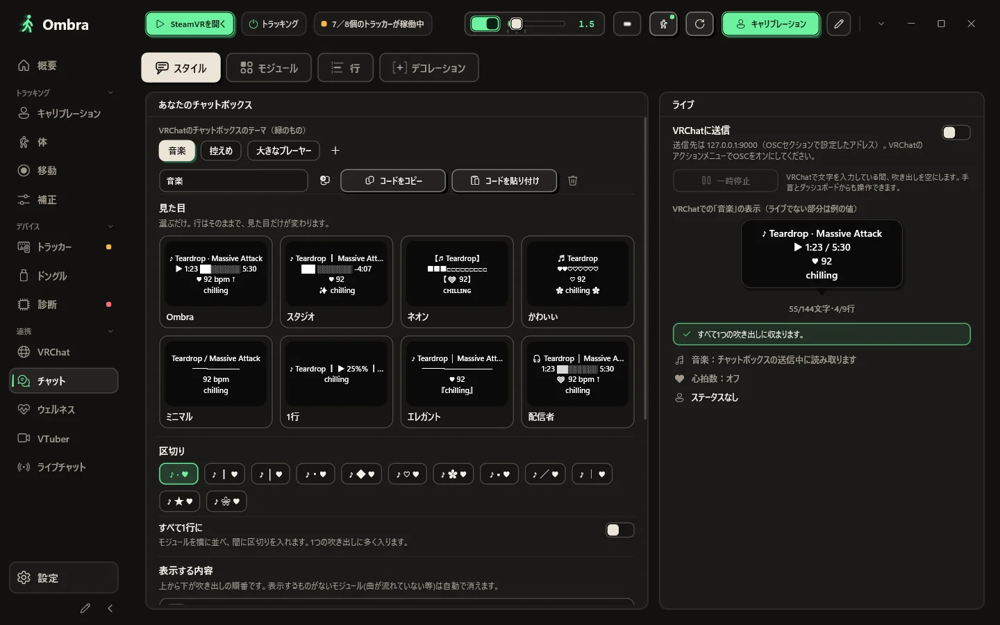
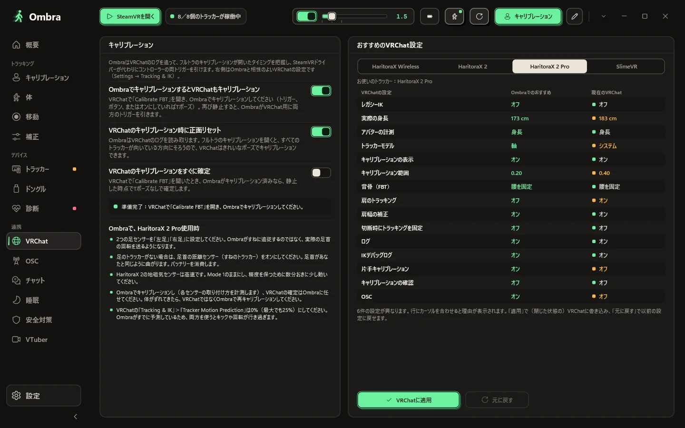
まずは見た目から。あなたの行で描いた本物のVRChat吹き出しが8種類、シンプルからかわいい系まで。モジュールをオン・オフし、上下に並べ替え、VRChatで本当に表示できる12種類の区切りから選ぶか、全部を1行にまとめられます。
T7RK-1J85-6のような9文字のコードで共有。間にサーバーはありませんOmbraでキャリブレーションするとVRChatのキャリブレーションも完了。VRChatがあなたのトラッカーに推奨するフルトラ設定もワンクリックで適用でき、元に戻すこともできます。
VRChatは、誰が入ってきて、どのアバターを読み込んだかを記録しています。OmbraはそのログをPC上で読み取るので、クラッシュ後には原因と思われるユーザーがわかり、そのアバターもワンクリックで非表示にできます。
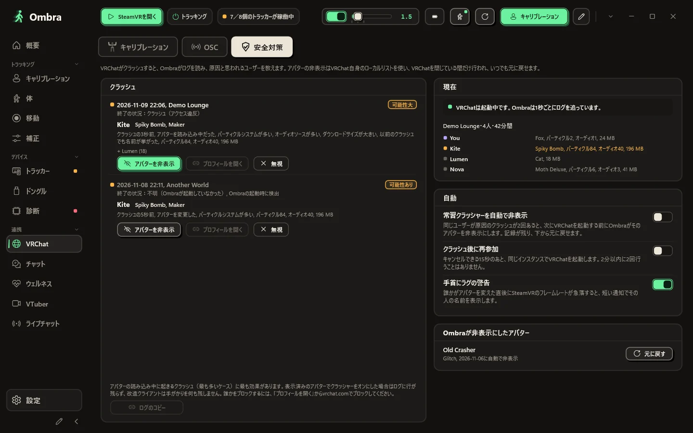
プレイ中に必要なものは、手首とSteamVRダッシュボードにそろっています。
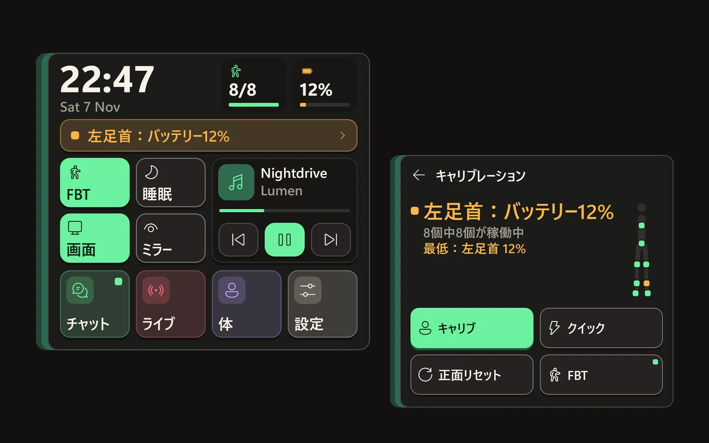
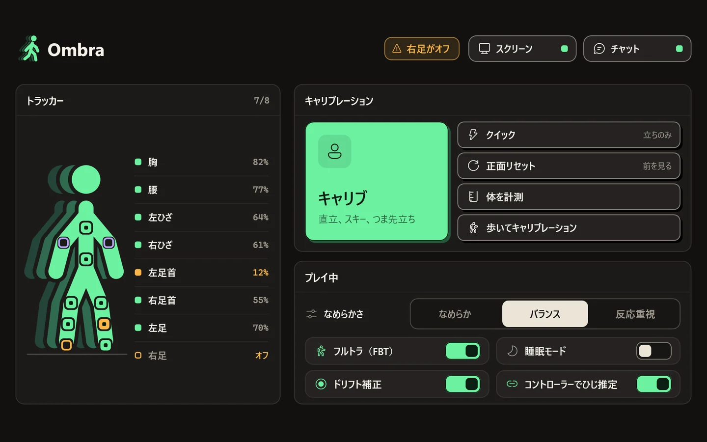
手首を見るとふわっと現れます。大きな時計、動いているトラッカーの数と一番少ないバッテリー、キャリブレーションの状態、名前付きの4つのスイッチ（フルトラ、睡眠、スクリーン、ミラー）、そして音楽。PCの通知もここに届きます。目をそらすと消えます。
すべてのトラッカーとバッテリー残量、キャリブレーションと正面リセットの大きなボタン、そしてプレイ中に切り替えるスイッチ。
サイドバーを並べ替えて、好きな色を選べます。元に戻すのはワンクリック。
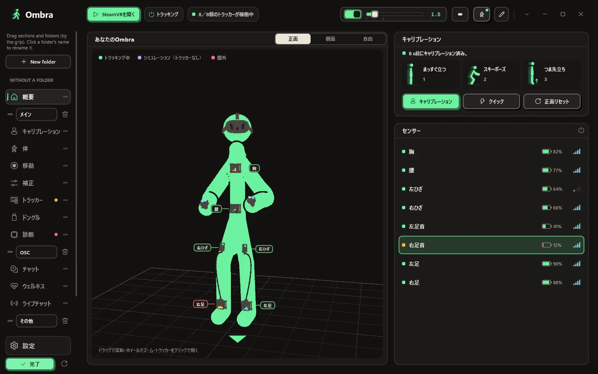
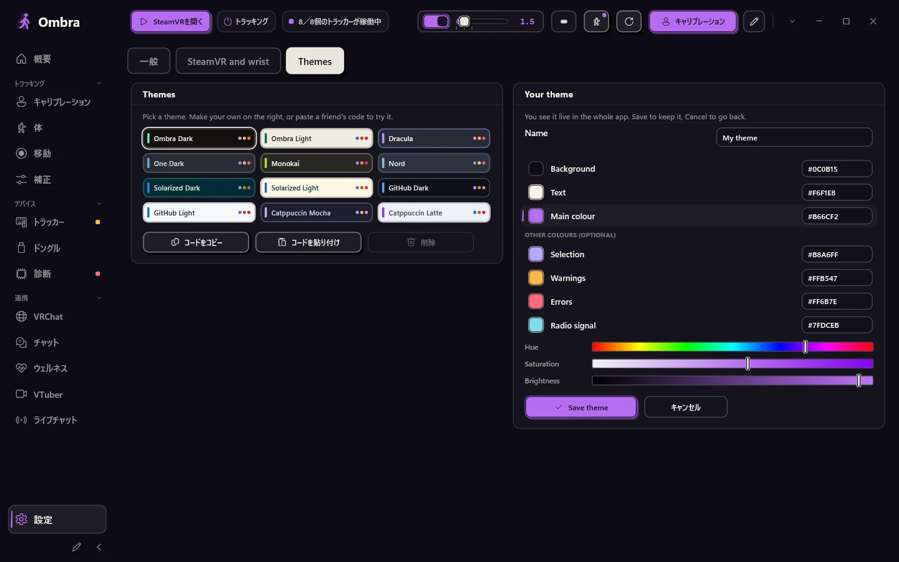
サイドバー下の鉛筆を押すと整理できます。フォルダーを作って名前を付け、項目やフォルダーごと好きな場所へドラッグ。
設定 → テーマ → 自分のテーマ：背景、文字色、メインカラーをバーか16進コードで選ぶだけ。残りはOmbraが計算します。アプリ全体とVR内のパネルにその場で反映。保存するか、キャンセルで元に戻せます。
ブラウザは内蔵せず、カラーテーマは12種類と自分のテーマ。SteamVRがOmbraを起動し、トレイでトラッカー用パネルとともに待機します。
よく使うボタンを、好きな順番に。
新しいバージョンが出るとお知らせします。SteamVRの実行中にアップデートすることはありません。
オプション：再起動後、じっと立つとOmbraが自動でキャリブレーションします。
Ombraがインターネットでしていること、していないことを、すべてここにまとめました。
Ombraはよく更新されます。最新バージョンの内容をリリースノートからそのままお届けします。以前のバージョンもどうぞ。
Ombra
各バージョンには、変更点と更新方法をまとめたノートがあります。
Windows 10または11（64ビット）とSteamVR。GXドングルとHaritoraX 2・2 Pro・ワイヤレス、またはSlimeVR互換トラッカー。
ファイルはOmbra-Setup.exeひとつだけ。下のボタンからは、いつでも最新バージョンが手に入ります。
ドングルを使えるのは、一度にひとつのアプリだけです。
管理者権限は不要で、SteamVRドライバーを登録します。Windowsに警告されたら、下のよくある質問をご覧ください。
トラッカーの電源を入れてSteamVRを起動し、トラッカーを装着してキャリブレーションを押します。
最新バージョン。すべてのリリースと変更内容
リリースごとにMicrosoft Defenderでスキャンし、VirusTotalにもアップロードしています。レポートを見る
知りたいことが見つからないときは、GitHubで質問してください。
いいえ。Ombraはドングルを直接読み取り、トラッカーのペアリングや、Shiftall純正ファイルでのファームウェア更新も行います。Ombraの使用中は、ほかのトラッカーアプリを閉じておいてください。
GX2またはGX6ドングル経由のHaritoraX 2、2 Pro、Wireless、そしてWi-FiまたはUSBレシーバー経由のSlimeVR互換トラッカー（ButterflyやSmol Slimeなど）。Viveトラッカーなどのベースステーション式トラッカーはQuestに位置合わせでき、SteamVRにある他のIMUトラッカーもなめらかにできます。HaritoraX 1（有線）には対応していません。
はい。PCにつなぐ場合はSteamVR経由で、有線でも無線でも使えます。Quest単体でVRChatを動かしている場合は、OmbraがPCからOSCで体の動きを送るので、SteamVRは不要です。
インストーラーはまだコード署名されていないため、SmartScreenに認識されません。詳細情報をクリックしてから実行を押してください。セットアップはユーザーフォルダーにインストールされるので、管理者権限は不要です。
セットアップでOmbra専用のSteamVRドライバーがインストールされます。トラッカーは役割（腰、胸、ひざ、足、ひじ）が設定済みの状態でSteamVRに表示され、Ombraの起動もSteamVRが自動で行います。
ありません。Lighthouseデバイス、ヘッドセット、コントローラーは一切変更しません。ドライバーが作るのはOmbraの仮想トラッカーだけで、ほかのIMUトラッカーのスムージングも、オンにした場合にしか行いません。
いいえ。チャットボックス、VRChat用ツール、ヘッドセットから作る体のためだけにOmbraを使う人もたくさんいます。インストール時にトラッカーなしを選べば、ドングルを求められることはありません。
はい。Ombra.exe --demoを実行すると、GX2とGX6につながった8個のデモトラッカーで試せます。デモモードはCOMポート、Bluetooth、SteamVR、設定に一切触れません。
アプリとこのサイトは、英語、イタリア語、ドイツ語、フランス語、スペイン語、ブラジルポルトガル語、日本語、韓国語、簡体字中国語、ロシア語に対応しています。OmbraはWindowsの言語に合わせて表示され、設定から変更することもできます。
いいえ。Ombraは独立したプロジェクトで、無料でダウンロードして使えます。ソースコードは公開していませんが、機能や拡張、翻訳の提案はGitHubで受け付けています。
はい。Ombraは一人の開発者がAIツール（主にAnthropicのClaude）を使って作っています。用途は調査、コード、テスト、翻訳です。Ombraの機能を決め、すべてのリリースを承認するのは開発者本人です。画像生成AIは使っていません。スクリーンショットはすべて実際のアプリの画面です。Ombraの中でAIを使うのは、オプションの音声チャットボックス入力だけです。Whisperモデルはお使いのPC上で動作し、音声が外部に送られることはありません。
Ombra-Setup.exeをダウンロードしています
Windowsに「PCが保護されました」と表示されたら、詳細情報をクリックしてから実行を押してください。インストーラーはまだコード署名されていないため、SmartScreenに認識されません。
Ombraを気に入っていただけたら、GitHubでスターをお願いします。ほかの人がOmbraを見つける手助けになります。
GitHubでスター